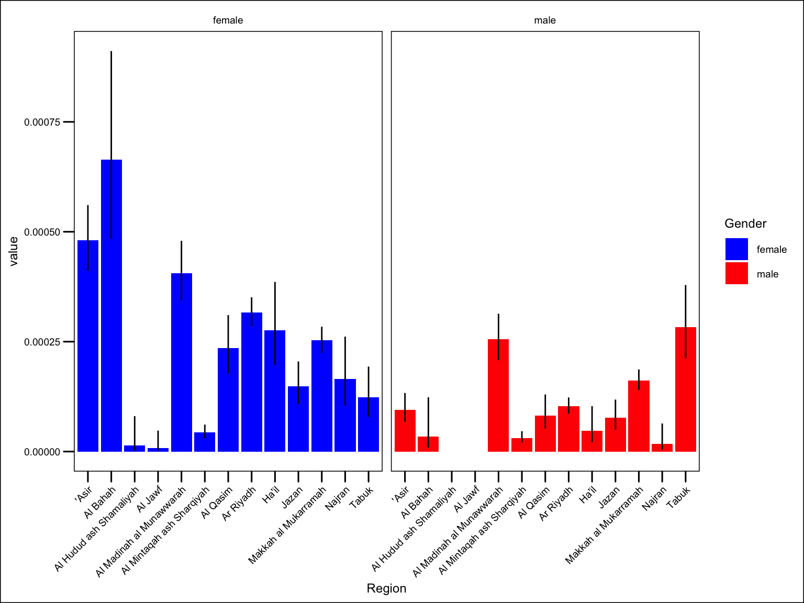
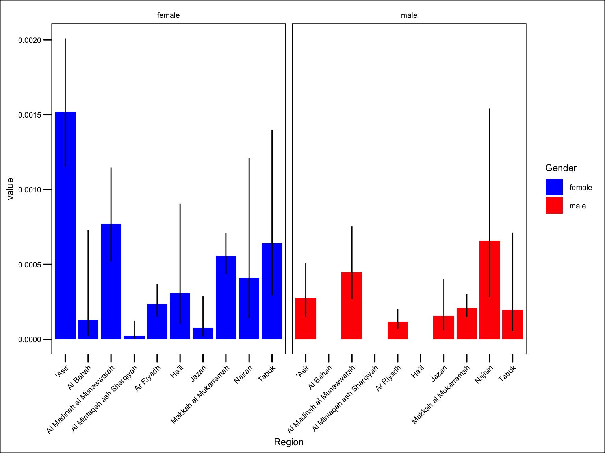

flowchart TD A[Data] --> B[population data] A --> C[vaccination data] C --> D[[recode region names]] --> E[[calculate age bands]] --> F[[calculate vaccination counts]] B --> G[[calculate age bands]] --> H[[calculate population counts]] F --> I[[join datasets]] H --> I I --> J[calculate rates and ci]
7 Flu vaccination coverage
7.1 Workflow
7.2 Clean data
Recode region names Add new age bands
Code
flu_data <- flu_data |>
mutate(paed = dplyr::between(age, 0, 18),
older = age >= 65) |>
mutate(Region = case_when(str_detect(Region, "Baha") ~ "Al Bahah",
str_detect(Region, "Qu?assim") ~ "Al Qasim",
str_detect(Region, "Asir") ~ "`Asir",
str_detect(Region, "Hail") ~ "Ha'il",
str_detect(Region, "[Mm]adin") ~ "Al Madinah al Munawwarah",
str_detect(Region, "Jizan") ~ "Jazan",
str_detect(Region, "Makka") ~ "Makkah al Mukarramah",
str_detect(Region, "Sharqiya" ) ~ "Al Mintaqah ash Sharqiyah",
str_detect(Region, "Northern Frontier") ~ "Al Hudud ash Shamaliyah",
str_detect(Region, "Riyad") ~ "Ar Riyadh",
TRUE ~ Region ))7.3 Calculate regional numerators and denominators
Calculate region-by-gender populations for 0-18 and 65+
Calculate region-by-gender vaccinations for 0-18 and 65+
Code
pop_paed <- pops |>
group_by(Region, Gender, paed) |>
reframe(pop = sum(Population)) |>
filter(paed == "TRUE") |>
mutate(Gender = recode(Gender, "Female" = "female", "Male" = "male"),
Region = recode(Region, "`Asir" = "'Asir"))
pop_older <-pops |>
group_by(Region, Gender, older) |>
reframe(pop = sum(Population)) |>
filter(older == "TRUE") |>
mutate(Gender = recode(Gender, "Female" = "female", "Male" = "male"),
Region = recode(Region, "`Asir" = "'Asir"))
## fills all region-gender categories and remove unknown
paed_flu <- flu_data |>
filter(paed == "TRUE") |>
count(Region, Gender) |>
complete(Region, Gender) |>
filter(Gender != "unknown") |>
mutate( Region = recode(Region, "`Asir" = "'Asir"))
older_flu <- flu_data |>
filter(older == "TRUE") |>
count(Region, Gender) |>
complete(Region, Gender) |>
filter(Gender != "unknown") |>
mutate( Region = recode(Region, "`Asir" = "'Asir"))7.4 Join populations and vaccination data
Code
paed_nd <- paed_flu |>
left_join(pop_paed) |>
select(-paed)
older_nd <- older_flu |>
left_join(pop_older) |>
select(-older)7.5 Calculate coverage
Code
paed_coverage <- paed_nd |>
phe_proportion(x = n, n = pop)
older_coverage <- older_nd |>
phe_proportion(x = n, n = pop)7.6 Visualise
Code
paed_coverage |>
ggplot() +
geom_col(aes(Region, value, fill = Gender)) +
geom_linerange(aes(Region, ymin = lowercl, ymax = uppercl)) +
theme(axis.text.x = element_text(angle = 45, hjust = 1) ) +
facet_wrap(~ Gender) +
scale_fill_manual(values = c("blue", "red"))
older_coverage |>
ggplot() +
geom_col(aes(Region, value, fill = Gender)) +
geom_linerange(aes(Region, ymin = lowercl, ymax = uppercl)) +
theme(axis.text.x = element_text(angle = 45, hjust = 1) ) +
facet_wrap(~ Gender) +
scale_fill_manual(values = c("blue", "red"))

